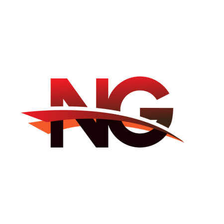

Özellikler

Yüksek Kaliteli Müzik Akışı
Tüm kullanıcılara kristal netliğinde bir dinleme deneyimi sunarak müziği doğrudan Discord sunucunuza yüksek kalitede aktarın.
7/24 Aktif
Botumuz 7/24 çevrimiçi olup siz uzaktayken bile müziğinizin çalmasının asla durmamasını sağlar.
Kullanımı Kolay Komutlar
Sunucunuzdaki herkesin kullanabileceği basit ve sezgisel komutlarla müziğinizi kontrol edin.